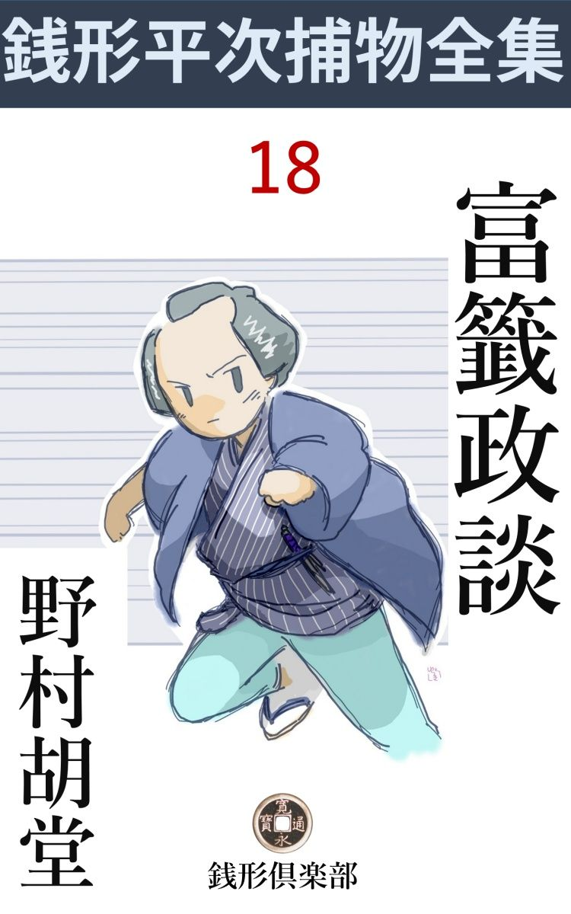
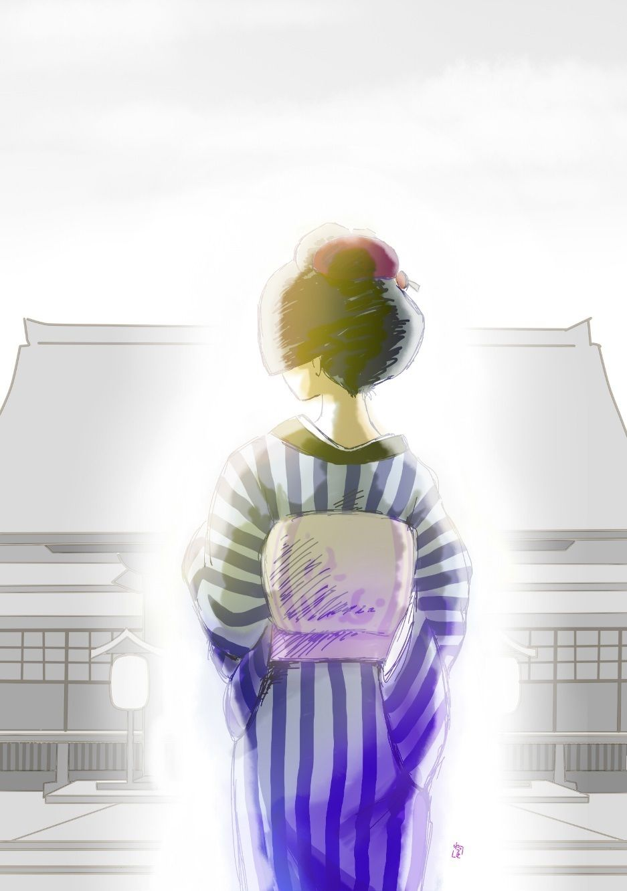

| 富籤政談: 銭形平次捕物全集第18話 (銭形倶楽部) | |
| 野村胡堂 | |
| ZENIGATA CLUB (2018) | |

一
「親分はいらっしゃる？」
「まア、お品さん、暫くねえ、さア、どうぞ------」
取次のお静は、手を取らぬばかりに、石原の利助の娘で、年増 っ振りの美しいお品を招 じ入れました。
「何？ お品さん、それは珍しいねえ、近頃、兄哥 はどうなすったんだ」
銭形の平次も、この珍客の声を聞いて、あわてて浴衣 の肌を入れながら出て来ました。妙に蒸し暑い日、八朔 はとうに過ぎましたが、江戸はなかなか涼風 の立つ様子もありません。
「親分、暫く、実は少し知恵を拝借したいことがあって伺ったんですが」
お品は座蒲団の横へ少し堅く坐りました。
まだ二十 を越したばかりの、滴 るような美しさですが、一度出戻りになってからは、すっかり諦め切った姿で、近頃は兎角勝れない親父の利助を援 けながら、大勢の子分を指図してお上から預かった、十手取縄を恥かしめないだけの事をしているお品だったのです。
「知恵や金はあるわけはねえが、お静、到来物の西瓜 があったら、あいつは綺麗事じゃないが、喉 の渇 いた時はよかろう、お品さんに切って上げな」
「あれ、私はもう冷たい水で結構、お静さん構わないで下さい」
帷子 の涼しい着こなし、炎天の昼下がりを、本所から神田までやって来て、大した汗もかかない人柄がなつかしまれます。
「ところで、頼みと言うのは何だえ、お品さん、お品さんに頼まれるのは狸囃子 以来だが------」
「親分、その節はどうも------」
「いや、お礼には及ばない、私で出来ることなら、何でもやって上げたい------。実はネお品さん、一と月ばかり前からちょいちょい私のところへ変な手紙が舞い込むんだ」
「------」
お品は言い出しそびれて、平次の顔を眺めました。
「江戸中の何万という人が騙 されているのを知らないか、平次の馬鹿野郎------、とネ、これが手紙の文句だ、平次の馬鹿野郎は言わなくたって判っているが、江戸中何万の人が騙されていると言うのが気になってならねえ、一生懸命考えこんだが、思い当ることが一つも無いばかりでなく、生憎なことに、この節は世間が無事で、日本橋から神田へかけて、掻 っ払 いが一つねえ始末だ、何か変った事がねえものかと、実はこの間から考えていた矢先なんだ」
「まア」
「そこへお品さんが飛込んで来たのは、全く鴨 が葱 を背負 って来たようなものさ------、ハッハッハッ、気を悪くしてくれちゃいけない。兎に角、何か仕事がないと、俺は退屈で叶 わなくなるんだ。知恵や西瓜ですむことなら、どんな事でもやるよ、お品さん」
容易に人を縛らぬ銭形の平次が、こんな戦闘的なことを言うのは、妙な手紙に苛立 っているためでしょう。
「そう仰しゃられると、極りが悪くなりますが、大変なことが出来たんです。親分、聞いて下さい、こう言うわけ------」
二
お品の家のツイ近所に住む、お勢という素姓の知れない年増女が、いきなり今朝飛込んで来て、
「石原の親分、ちょいと来て見て下さい、大変な事が起ったんです」
眼の色を変えて言うのです。折 悪 しく、利助は持病で昨夜から枕も上がらぬ有様。娘のお品は、岡っ引の真似をするわけではありませんが、兎も角、行って見ると、
「お品さん、お前さんは親分より見込 が確かだって評判だから、是非探して下さいな。私の大事の大事の、命より大事の手箱が無くなったんだから」
命より大事の手箱と言う以上は、男の手紙とか、臍繰 りとか、独身女相応のものが入っているだろうと思って訊くと、それは大違いで、
「中には、海雲寺 様の富籤 が一枚入っているんです、鶴の一千二百三十四番の札で」
「外には」
「外には何にもありゃアしませんが、その富札が当ると千両になるでしょう、お品さん、どうか探し出して下さい、あれが無いと、私は命がなくなるかも知れない」
あまりの事に、お品も面 喰 いました。富籤の札が当ればこそ千両ですが、それは何万枚に一枚の幸運を担 った札で、あとは紙 っ屑 の足しにもなりません。
「お勢さん、あきらめなすったら？ そんなものを盗ったって何にもならないし、手に戻ったところで仕様がないじゃありませんか」
「いえ、あの札は、並大抵の札じゃない、どうしようねえ、お品さん」
お勢は少し気が変になったのではあるまいかと思われるようでした。
「父親 ではあの通り休んでおりますから、神田の平次親分でも頼んで来ましょうか」
お品は持て余してそう言うと、
「飛んでもないお品さん、私はあの平次とかいう男は大嫌いさ、どうか呼ばないで下さい」
そういった有様で手の付けようがありません。
なおも、逆上 気味のお勢をなだめて訊いて見ると、泥棒は暁方 入ったものらしく、お勝手口をコジ開けて、お勢の枕元から、金 唐 革 の小さい手箱を持出し、路地で打割って、その中の富札だけを持って逃げ出したというのです。
富札を買って気の違った人や、自殺した人もある時代ですから、それだけなら別に大した事件でも何でもないのですが、お勢に伴 れられて、半丁ばかり先の、小綺麗なしもたやを訪ねたお品は、そこで思いも寄らぬ大変な事件に出逢 わしてしまったのでした。
早い話------。
二人の美しい女、お勢とお品が、本所中の人目をひきながら、同じ町内のお勢の家まで辿 り着いて、抜け裏の奥の格子戸を開けると、いきなりプーンと鮮血 の臭い。
「あッ」
いくらか物馴れたお品が真っ先に飛上がると、入口の四畳半に、下女のお寅 が、紅 に染んで倒れていたのでした。引起して見ると、後ろから、鈍 い重いもので、後頭部 をやられ、頭の皿を打ち割られて物をも言わずに死んでしまった様子です。
すぐさま町役人にも知らせ、お品の父の利助は病中で、二三の子分が駆けつけましたが、何分目先の見えるようなのは一人もありません。うっかりすると機会を失って、親の利助の手落ちにならないものでもあるまいと思ったお品は、そこから駕籠 を飛ばして、神田の平次を呼び出しに来たのでした。
三
「親分、この暑いのに、本所まで行って下さるのも大変でしょうから、一応 知恵だけでも貸して下さいませんか。私や子分達にはどうにも見当のつけようがありません」
お品の折入っての頼みです。この娘の父親には、長い間白い眼で見られた平次ですが、近頃はすっかり打ち解けた仲でもあり、且つ、病気で寝ているとあっては、じっとしていられる平次ではありません。
「それは大変、大分 、奥行 のありそうな話で、ここから射して利くような知恵を持っている柄 じゃねえ、こうしようじゃないか、お品さん、これからお前さんと一緒に行って、兎も角、その現場を一と通り見せて貰って、何事もそれからという事にしようじゃないか」
「そうして下されば、親分」
「まア、拝まなくたってよかろう、お品さん、力になるのも、なられるのも、お互いの事だ------お静、支度をしてくれ、今晩は帰らないかも知れないから、ガラッ八の野郎が来たら石原の兄哥 の家へ来るように言っておくれ」
平次は気さくに立ち上がりました。
それから本所まで、暑い時分で、尻を端折って駆け出すわけにも行かず、町駕籠を飛ばして、行き着いたのは、かれこれ昼頃。真っ直ぐにお勢の家まで行くと、路地の外は黒山の人だかりですが、幸か不幸か、まだ検屍の役人は来ておりません。
「寄るな寄るな、見世物じゃねえぞ」
町役人と、利助の子分とが堅 めて弥次馬を追っ払ってる中へ、二挺の駕籠は、二匹の蜻蛉 のようにピタリと着きました。
「あ、お品さん、お帰んなさい」
「神田の親分も、いらっしゃいまし」
子分達は道を開けて通します。
中の様子は、先刻 お品の口から聞いた通り、入口の四畳半に、血の海に浸 った下女のお寅は、二十五六の欲の深そうな肥 り肉 の女で、あられもない姿で引っくり返っておりますが、引起して見ると、後頭部を唯 一と打 、物の見事に打ち砕 かれております。
「恐ろしい手練だ」
「へエ------、親分、矢張り武家か何か、ヤットウの心得のある者がやったのでしょうか」
見張っていた、利助の子分が口を出します。
「いや、武家なら刀で斬るだろう。これは金槌 か何かで力任せにやられたんだ。手際のいい鍛冶屋 か何かの仕事じゃないか」
と平次。
「へエ------、じゃ町内の鍛冶 屋を虱 潰 しに挙げてみましょうか」
「待ってくれ、そんな事をされちゃ物笑いだ。それよりお勢さんとやらはどこだ」
そう言う平次の声を聞いたものか、
「あら、銭形の親分さんでいらっしゃいますか、飛んだお骨折で」
次の間から顔を出したのは、二十三四の一寸凄いほど美しい女です。
「飛んだ、気の毒だね」
平次はこの女に見覚えがあるような気がしましたが、どうしても思い出せません。それにしても、この縹緻で、この年配で本所の奥に洒落 たしもたや暮しをしているのですから、いずれ物持の後家か、誰かの囲 われ者か何かでしょう。
「お寅とか言ったね、------この女を何時頃から置きなすったんだえ」
「今年の四月からですから、まだほんの四月にもなりません。よく気の付いて働く女でしたが、可哀想なことをしました」
お勢は目をしばたたいております。細面の、華奢 な身体ですが、妙に肉感的なしなやかさがあって何がなし、人に訴える力の強い女です。
「ところで、昨夜、何か盗られなすったそうだな」
「え、つまらないもので、極りが悪い位のものです」
「その手箱 のこわれを見せて貰いましょうか」
「さア、どうぞ」
お勢は用意して置いたように、素直に小さい手箱を持って来て見せました。
「これは立派なものだ」
真物 の金 唐 革 で張りつめた、見事な手箱ですが、たった一撃で打ち割られて、中の木地 がメチャメチャに砕けております。
「フーム」
平次は引繰り返して調べながら、一人で唸 っております。
「どうなさいました、親分」
「なアに何でもないが、------これだけの物をたった一と打ちで砕くのは、どんな人間だろうと思っただけの話さ。ところで、盗られた品は？」
「それがつまらない物なんです」
「富 札 とか言ったね」
「え」
「外にはないね」
「外にお金が少し」
「へエ------、お品さんからはそんな事を聞かなかったようだが」
「うっかりしていたんです、後で気が付くと小判と小粒を交ぜて、十五両ばかり入っておりました」
お勢は事もなげです。
「十五両なら大金のうちだ、してみると、金が目当てだったんだね」
「そうでしょうか」
「富の番号は」
「鶴 の一千二百三十五番と思いましたが------」
「え？ もう一度」
「鶴の一千二百三十五番で御座います」
「間違いはないだろうな」
「間違いは御座いません」
平次が後ろを振り向くと、お品の眼とハタと合いました。
お品に聞いた番号は、確かに鶴の千二百三十四、この女の言葉とは、たった一つ違っております。外の事なら違っても大した事はありませんが、富札の番号は、一つ違えば、どんな事になるかもわからないのです。
お品の眼は、何やら雄弁 に語りますが、平次は、何を考えたか、二つ三つまたたきしてそれを封 じたまま、
「海雲寺の富突 は明日だ、その札だね」
誰にともなく、こう言います。
「------」
丁度そこへ、町役人に案内されて、検屍の役人が乗り込んで来ました。
それを合図のように、女だてらにと思われたくなかったのでしょう、お品は人混みの中へ姿を隠してしまいました。
四
お寅の里は葛西 の百姓、死体はその日のうちに、親が来て引取りましたが、下手人の見当はまるっきり付きません。
お勢というのは、山の手辺の物持の後家で、継子 と折合が悪くて、本所で独り暮しをしているということでしたが、近所の噂では、夜な夜な男が忍んで来ると言っております。多分近所の誰かが、世話を焼いているのでしょう。いろいろ手を尽して調べましたが、本人が口を緘 んで言わないのと、肝腎 の下女が死んでしまったので、突き止める手蔓 もありません。その晩は葛西のお寅の親元、お勢の本家、と手を尽して探しましたが、何としても手掛りらしいものが掴めません。多分、流しの強盗 が、前の晩入って収入 が少なかったために、翌る日は下女一人のところを狙って、また入ったのであろう、------利助の子分も、近所の衆も、そう言ったことで片付けてしまったものです。
「そんな筈はない」
平次は一人思い悩みました。
引返して、もう一度、お勢の家を訪ねたのは、その晩の亥刻 （十時）頃。
「まア、親分、よくいらっしゃいました。淋しくて、淋しくて私はもうどうしようかと思っていたところでした」
お勢は手を取らぬばかりに引入れます。
「いや、もうそうしてもいられない」
血潮に汚 された畳を剥がして、薄縁 を敷いた四畳半の上がり框 に腰を下ろして、そう言いながらも平次は、腰の煙草入を抜きました。
「そう仰しゃらずに親分さん------、ちょいとでも入って下さいませんか、御町内には馴染 はなし、麹町 の本家の者は、不人情で寄り付きゃしませんし、お寅が殺されたり、強盗 が入ったりした後へ、私はたった一人で、死ぬほど恐ろしい思いをしているんです」
お勢の言葉は満更嘘でもなかったでしょう、華奢 な胸を抱いて、こう言う唇が、少し蒼 ざめます。
「それはお気の毒だね、泊って貰う人でも頼んだらどうだ」
「それが親分さん、金ずくでも腕ずくでも、人殺しのあった後などへ泊ってくれ手はありゃしません。こんな時は身内の者が欲しいと思いますよ」
平次は何時の間にやら草履 を脱がせられて、次の間の長火鉢の前まで引張り込まれておりました。女一人で、このような夜を過そうと言う、美しいお勢に同情する気になったのでしょう。
やがて、銅壺 へ一本、ざっと湯掻いて、
「さア、親分、まア一つ召上がれな」
飲まない先から、膝を崩したお勢は、斜 っかけにこう、小さい猪口 を差します。
「そんなにしちゃいられない」
「まア、固いことを仰しゃらずに、少し位はいいじゃありませんか」
「じゃ、ほんの一と口」
平次は到頭猪口を舐 めてしまいました。
「ね、親分さん、私本当に困ってしまったんです」
「それは困るだろう」
「いえ、親分でも泊って下さらなきゃア、とてもこの家で一と晩過せそうも御座いません、ね、親分」
「冗談言っちゃいけない、お勢さん、お前さんは、それにしちゃ少し綺麗過ぎるよ」
「まア、親分、程のいいことを」
「もう沢山、俺はあまりいかないんだが、お勢さんの勧 め上手で、到頭こんなに酔ってしまったよ。どりゃ、もう一と廻り」
平次は立上りました。
「ね、親分、お願いがあるんですが------」
お勢は言おうか言うまいかと言った調子で、暫くためらいましたが、
「本当に泊って頂けませんかしら」
ヒラリと、飛付くと平次の肩へ。
「あっ」
平次は、この美しい女郎 蜘蛛 を引離すのに、いい加減骨を折らされてしまいました。
「随分、情け知らずの親分ねえ、こんなに女へ恥を掻かせてもいいものでしょうか」
「お勢さん、冗談を言っちゃいけない。お前さんは、私が大嫌いじゃなかったかね」
「あら、誰がそんな事を申しました」
「まアいい、それじゃ用心するがいいぜ」
平次は漸く上がり框 から滑り落ちると、サッと格子の外へ飛び出してしまいました。
「あれ親分、待って下さい」
赤い、焔 のような女は路地の前まで追っ駆けて来ました。
「弱ったなア、お勢さん」
「いえ、もう決して無理は申しません。その代りに、一生のお願い、私を横網 まで送っては下さいませんか」
女は平次の袖に縋 り付いて息をはずませます。
「横網へ行ってどうするんだ」
「女一人で、どう我慢しても、この家では一と晩とは過されません。横網の指物師 で藤次郎というのは、私の知合いですから、あすこまで送って下さいませんか」
「それ位の事なら出来るだろう」
「まア、有難い、それじゃちょいと待って下さいまし。火の用心をして戸締りをして来ますから」
お勢は引返しましたが、間もなく出て来ると、平次と肩を並べて、月のない街を、横網の方へ------妙にそわそわしながら辿りました。
「ここで御座いますよ、親分」
とある格子 、深々と締切った前に立って、お勢は平次の耳に囁きました。
「それじゃ、俺は帰ろう」
「済みませんが親分、ちょいと声を掛けて下さいませんか、藤次郎親方とは長い間の知合いですが、気まずい事があって、近頃は往来もいたしません、私がいきなり顔を出したんでは、又何とか厭なことを申しましょう。お願いで御座います、藤次郎に否応 言わせないように、ほんの暫く親分のお顔を拝借さして頂けませんか」
お勢はそう言いながら、なよなよと平次の肩へ、くずおれた紫陽花 のように凭 れかかるのでした。
平次が点頭 いたことは言うまでもありません。
間もなく、お勢の叩く拳 につれて、格子は内から開いて、ヌッと出たのは、醜 い男の顔と、赤い手燭でした。駆け寄って囁やくお勢に、何やら苦い顔を見せておりましたが、お勢が身を避けて、手燭の灯を平次の顔一パイに浴びせると、男はギョッとした様子で、物も言わずにお勢を引入れます。
「有難う御座いました、親分さん」
お勢は格子を潜 りながら、こちらを向いて、少し大袈裟 に礼を言いました。その後ろに立った藤次郎は、妙にギゴチない表情で、凝 と女の一挙一動を見詰めております。
五
翌る日。
「お品さん、ガラッ八は到頭 来ませんね」
「どうなすったんでしょう」
夜っぴて活動した平次は、朝のうちに利助のところを訪ねましたが、昨夜から待った、好助手のガラッ八は到頭姿を見せません。
「何かに引っかかっているんでしょう、仕様のない奴だ」
「お手伝いなら、家の若い者じゃどうでしょう、二三人ゴロゴロしておりますが」
「結構過ぎる位ですよ、お品さん、大の男の、あまりはしっこそうなのは、反って相手に用心させるから、私はガラッ八位な頓間 な顔をしたのが欲しいんだ」
「まア」
「お品さんなら、女だけに相手も気を許すだろう、思い切って出かけて見る気はないかね」
「私でもお役に立つことなら、何でも遠慮なしに仰しゃって下さい」
「それは有難い、お品さんは生れ付き目先が見えるから、男だったら立派な御用聞だ」
「まア」
それでも大急ぎで支度をして、二人が立ち出たのは朝の巳刻 （十時）過ぎ。言葉少なに、平次が案内したのは、海雲寺の境内、その日正午 の刻に富 突 を興行しようという、物凄い場所でした。
徳川時代の富籤 というものは、どんなに盛んなものであったか、これは書いていると際限もない事ですが、兎に角、幾度も幕令を以 て禁止されながら、これが明治初年まで続いて、あらゆる悲喜劇を生み、あらゆる害毒を流したことは言うまでもありません。
元禄、特に享保 以後はいろいろ取締りの方法も講ぜられ、大検使小検使などという大名以上の監督者まで付いて、比較的公平なものになりましたが、それでも、役人の目をかすめて、影 富 などいうものが行われました。
まして平次が盛んだった頃の富突というのは、随分怪しげなもので、谷中の感応寺 （今の天王寺）、湯島天神、目黒不動尊などで興行した、所謂 天下の三富と言った、格式のあるのは別として、市中に催 された富興行のうちには、随分いかがわしいものも多かったと言われております。（編注）
元来は、社寺の修繕新築の寄進などに行われたものですが、後にはすっかり射倖 機関のようになってしまって、多い時には江戸中に二十五箇所の富があったとい言う位です。一番当りは千両から、少なくも百両二百両というのですから、その当時の相場にすると一と身上を起すわけで、江戸中の人間を夢中にさしたのも無理のないことです。
その日、海雲寺に集まったのは、五六千人、広い境内も身動きもならぬ有様。本堂正面には青竹の逞 しい手摺を組んで盛装の僧が十数人、朝から般若経 を上げております。その頃はまだ、大検使小検使などいうことはありませんが、寺社奉行からは、係の者が二人出張り、町役人、寺の世話人、檀家 総代などと、麻 裃 に威儀を正して居流れます。
香の煙、お経の合唱、梵鐘 の伴奏に、次第に時刻がたつと庭一杯に集まった群衆は、真昼の暑さも忘れて、虫のように蠢 めきます。一つ当れば、五寸二分に一寸五分の鳥の子の富札が一千両になるのですから、これは緊張しない方がどうかしているでしょう。千両というと、小判が千枚、その頃の良質の小判は一枚四匁で、今の相場にすると一千万位に当ります。物の安かった頃ですから、その通用価値は何億円にもかけ向うでしょう。千両分限という言葉が、今の億万長者と同じ意味に用いられた時代の事です。
やがて正午 の刻 近くなると、本堂正面に据えた、縦二尺、横三尺の白木の箱、数千枚の富札が一パイに入ったのへ、二重蓋 をして、大 海老錠 をおろし、役人世話人立合の上で、ガラガラガラと揺り動かし、中の札を丁寧にかき混ぜます。
それが済むと、寺の小坊主、年の頃十二三ばかりのが、墨染 の腰 衣 を着け、手に長柄の錐 を持って現われ、世話人の手で、厳重に目隠しをされ、札箱の後ろへ立たされました。
その後 ろには、寺社奉行の検使をはじめ、札番書留役、札番読上役などが控え、本堂の奥では、引続き読経の声、鐘の音に和して、これが何とも言えない悲愴 陰惨 なものだったそうです。
やがて、突役の雛 僧 は、錐を上げて、二重蓋の真ん中にある穴に突き入れました。第一番に突き上げたのは、当日の一番当り千両の福運のある札ですから、錐は奈落 の底から、天上まで引上げられるような心持。境内に充ち溢 れた数千の群衆は、しわぶき一つする者もありません。
「一番札、鶴の千二百三十四番」
読上役がそれを高々と読み上げると、
「ワーッ」
境内はさながら大波の寄せたような有様。中には、卒倒する者も、蹈 み潰されるものもあるという騒ぎです。
六
「一番当りの札を持った方はないか」
「鶴の一千二百三十四番はないか」
境内の人が大分散った頃まで、名乗 って出ないのはどうした事でしょう。
「千両の当りは鶴の一千二百三十四番だぞ」
呼ぶ声に応じて、
「私で御座います」
水の如く冷静に、疎 らになった、人垣を分けて、書留役の前へ近づいたものがあります。
「なんだ、お前さんか、早く言えばいいのに」
見ると、二十三四の水の滴 れそうな女。
「あまり混乱がひどくて、前へ出られやしません」
物驚きをする様子もありません。
「所とお名前は------、ええと御承知だろうが三日以内に受取ると、定 めの寄附の外に一割の手数を申受ける、お判りだろうな」
「よく判っております。が、お金はなるべく急いで御下げ渡し下さいまし、私の処は、石原の孫右衛門店、勢と申して、後家で御座います」
「よろしい、七百両だけ、明日、遅くも明後日はお渡しする、受取りに来なさるがいい」
書留役は、この女の落着払った様子に舌を巻いて、少し呆気 に取られた形です。
お勢は一向こだわる風もなく、その儘引下がって、両袖や文字違いなどという、百両から五十両、三十両の福運にありついた人達の喜びを尻目に、静かに山門の外へ引返しました。
「ちょいと、お勢さん」
「あら、お品さん」
「お目出度う、千両当ったんですってねえ」
「え」
お勢は妙に擽 ったいような顔をして足を急がせました。
「でも、お前さん、千二百三十四番の札は盗まれたんじゃありません？」
「いいえ、盗まれたのは千二百三十五番だと言ったじゃありませんか」
「そう」
お品はその上追及 しませんでした。いや、追及したところで、何の足しにもならないことをよく知っていたのです。
千二百三十四番を当り籤 とすると、千二百三十五番は両袖で、百両の花籤 が付いている筈です。お勢の言うことが本当だとすれば、昨日、お勢のところから富札を盗んだ者が、その花籤の百両が欲しさに、名乗って出ていないとは限らないわけです。お品は引返して書留役に聞くと、
「千二百三十五番の花籤は売れ残って帰って来ましたよ、当りはありません」
何ということでしょう、お品は呆然 として、暫くは書留役の顔を眺めておりました。
七
「親分、これは一体どうしたわけでしょう、私には少しむずかしくなりましたが------」
頭の良いお品も、すっかり兜 を脱いで、間もなく帰って来た平次に報告しました。
「それは面白い、お品さん、お手柄だ。その花籤 が当りがなかったと言う事を聞いてくれたんで、俺は何もかも判ったような気がする」
平次の話はあまり予想外でしたが、その喜び勇む色に掛引があろうとも思われません。
「親分、それは本当でしょうか」
お品の美しい眼は、少し臆病にまたたきます。
「あの富籤 は大 騙 りなんだよ。実は今まで俺はそれを見張っていたんだが、どんな手品を使ったか、どうしても判らなかったんだ。お品さん、お前のお蔭で解ったようなものだ。お寺を一つ潰 すのは気の毒だが、今までも幾十遍となくやって来たことだし、放って置くとこれからもやるだろう。何万という人を盲目 にして、太い奴らだ。勘弁して置くわけには行くめえ」
「えッ」
千両の富籤が騙り？ そんな事があるでしょうか、お品はあまりの事に二の句がつげません。
「お品さん行って見よう、一刻の後れは千里の後れだ、細工を隠す隙のないうちに踏込んで見よう」
「------」
一気に飛出す平次。お品ももう、女だてらの遠慮などをしていられません。
二人が海雲寺に着いた時は、境内の人はすっかり散り、寺社奉行の検使 は帰りましたが、町役人や、役僧や、世話人はその儘居残って、跡始末をしている最中でした。
「御免よ」
「あ、銭形の親分」
世話人達は、何がなしギョッとした様子です。
「すまねえが、その富箱 をちょっと見せてくれないか」
「へエ------」
「その箱に腑 に落ちねえことがあるんだ、ちょいと見せて貰おうか」
平次は気が立っていたせいもあるでしょう、ツイ日頃にもなく威猛高 になりました。
「親分------いやさ、平次親分」
「何だい」
世話人の一人、原庭の顔役で相模屋の綱吉という好い男、本堂の青竹の手摺 から見下ろすように平次に突っかかって来ました。麻裃 は着ておりますが、拳骨 を懐へねじ込んでイザと言えば、これをパッと脱ぎそうな形になります。
「富は寺社奉行がお係りだ。町方の岡っ引が、何の因縁があって、そんな大きな口を利くんだ、帰れ帰れ」
「何だとッ」
「出直して来いってんだよ、銭形が何でエ、間抜けな面じゃねえか」
「------」
恐ろしい毒舌を浴びて、平次もサッと顔色を変えましたが、一言半句も返しようがありません。
「よしッ、帰ってやるが、寺社奉行の検使の方が、まだ遠くは行くめえ、その辺からお伴れ申して来るが、それまでその富箱へ手を掛けちゃならねえぞ、------お品さん、暫く見張っていて貰おう」
平次は言い捨てて、サッと帰ろうとすると、
「あ、待っておくんなさい、銭形の親分、相模屋が少し酔っているから、飛んだ粗相 をしました、どうぞ機嫌を直して、何事も大目に見てやって下さい」
と、もう一人の世話人、足袋 跣足 のまま飛降りると、平次の袖へゾロリと、一包の小判を握らせます。
「何をしやがる。こんな事をする以上は、いよいよ臭いに極まったようなものだ。お品さん後を頼むぞ」
平次は袖の小判を取って本堂に叩き付けると、後をも見ずに両国橋の方へ------。
二人の検使は、富籤 に不審があるという町方御用聞の申立てに、渋々 ながら海雲寺まで引返しました。
海雲寺の本堂は、上を下への騒ぎ、何べんか富の箱を片付けようとしましたが、その度毎に、お品と、利助の子分に妨 げられて、それもならず、何がなしに上ずった騒ぎの中に、時を過してしまったのです。
「鶴の千二百三十四番が一番札に当るということは前々から解っていたのに相違ありません。何万人の目を盗んで、太い奴らで御座います。後 のため、世上への示 し、箱の仕掛けをよく御覧下さいまし」
そう言って平次、今度は二人の検使と一緒に本堂に押上がりました。咄嗟 の間に気の付いたのは、二重蓋の下に、観世 撚 で鶴の千二百三十四番の札を平 に吊り、それを錐 で突き下げる方法ですが、見たところ箱の蓋には、観世撚を仕掛けた跡もなく、真新しい札にも何の異状もありません。
「どうした、何か不審の点が見付かったか」
と検使。
「へエ------」
平次は気が気じゃありませんでした。
次に考えられることは、錐に磁石 を仕掛け、当り札に鉄片を付けて置くことですが、これも、その札が深く隠れている時は無効で、その上、見たところ、長柄の錐にはなんの仕掛もありません。
平次はすっかり弱ってしまいました。
でなければ、読上役が手品を使ったか、------いや、そんな事はとても考えられません。役人や群衆の何万の目が見張っている中で、そんな器用なことが出来る筈はないのです。
「平次、いい加減にせい。折角売り込んだお前の箔 が剥げるぞ」
相模屋綱吉が、後ろで意地の悪い目を走らせると、平次は煮えくり返るような思いです。もし、この儘引下がるような事になったら、わざわざ引返させた検使の手前、自分は腹でも切らなければ納まりません。
「この箱を一日私に借しては頂けませんか」
到頭弱音を吐いた平次。
「馬鹿な事を申せ」
少し焦々 しているらしい検使に、たった一言で止めを刺されてしまいました。
「------」
平次は黙って目をつぶりました。必死の目先に、チラリと映るのは、お品の顔、お勢の顔、お寅の死顔、それから、あの藤次郎とかいう指物師 の醜 い顔です。
何心なく眼を開くと、本堂の隅、物の蔭に、その醜い顔がいるではありませんか。
------彼奴 は指物師だ、いや、------あの指物師が仲間だったのだ------
平次は豁然 としました。二重蓋の中を見ると、容易に見分けは付きませんが、中の板の木目に、何やら異状があるようです。その辺にある富籤を一枚拾って当てると、その変った木目の部分に丁度ピタリとはまります。
「これだッ」
平次の頭には、電光のような霊感が湧きました。箱の外側 をグルリと撫で廻すと、所々に打った厳めしい鋲 の一つが、どうやら心持動くではありませんか。
それをグイと引くと、二重蓋の一部の木目 へ、一寸五分に幅二分ばかりの穴があいて、丁度富籤を一枚そっくり呑むのです。念のために札を押し入れて、鋲を戻すと、札はスルリと飛出して、丁度穴一杯に塞 ぐ形になるのでした。世話人が鋲を動かして、これだけの細工をした上から、長柄の錐 で突いたところで、どうして立会いの役人や、境内の群衆に判るでしょう。
「野郎ッ、くたばってしまえッ」
見破られたと知って、一刀を引抜いて斬ってかかった綱吉は、
「えッ」
平次の投 った富札に、もろくも額を割られて尻餅をつきました。
「御用ッ、神妙にせい」
利助の子分は、お品の指図を待つまでもなく、疾風 の如く本堂に乱入します。間もなく、綱吉も役僧も藤次郎も一網打尽、検使の役人のために数珠 つなぎにされてしまいました。
「親分、有難う御座いました、お蔭で、いかさま富を見露 わして戴いて、どんなに人助けになったかわかりません」
お品は事がおわってから、つくづくこう平次に言いました。
「お品さん半分はお前さんの手柄だよ」
「冗談でしょう親分、それよりどうして藤次郎に目を付けなすったんです。後学のためにそれを教えて下さい」
「何でもないよ、箱は名人の指物師でなければ出来ないし、お勢が藤次郎の家へ行ったことから思い付いたんだ。最初から言えば、綱吉は役僧と共謀 になって、何か弱い尻のある藤次郎にからくりの箱を拵 えさして、長い間いかさま富を興行していたんだ。藤次郎は癪 にさわってたまらないが、自分にも弱いところがあるので、明らさまにゆすることも出来ず、折を狙っていると、ちょうど、綱吉が妾のお勢に千両の富の札を預けた事を知り、それを盗んで鼻をあかそうとしたんだよ。もっともそのためには下女のお寅を手なずけてかかったが、お寅がうるさい事を言うもんで、二度目に行った時、手前ものの玄翁 で一と打ちにやっつけてしまったんだ」
「お勢はそれを知っていたでしょうか」
「知っているとも。だから、俺をだしに使って藤次郎の家へ押かけ、藤次郎を脅 かして富の札を捲き上げたんだ、いや恐ろしい女だな。そして翌る日ノコノコ千両受取りに出かけたんだから一通りじゃない」
「------」
「もっともあの女は七人花嫁をさらった丹頂 のお鶴の妹だということだ。それくらいの事はするだろうよ。惜しい事に逃がしてしまったが、いずれは御用になる女には相違ない、------この間中から江戸中の何万の人が騙 されているのを知らないか、平次の馬鹿野郎と言う手紙を俺へくれたのは、外ならぬお勢さ、ハッハッハッ」
平次は事もなげにそう言っております。

海雲寺の役僧、綱吉をはじめ世話人一同、藤次郎、それぞれ処刑され、それから江戸の富籤の取締りはやかましくなりましたが、お勢はそれっきり姿を隠してしまいました。
この女の強 かさは、最初千両当るに極った札を紛失してあわてたのを、お寅が殺されると忽ち用心深く冷静になり、富籤の番号を変えて誤魔化 したり、盗られもせぬ金を盗られたと言って平次の注意を外へそらせようとした事でもよくわかります。
お勢がこの次に顔を出す時は、平次もまた一と骨折らせられる時でしょう。
それは何時の事かわかりません。
（編注）
谷中感応寺の現在の名称は底本では「大王寺」となっていますが、「銭形平次捕物百話」（中央公論社）などの表記と史実に基づいて天王寺に改めました。
作品中には、身体の障害や人権にかかわる、差別的な語句や表現が見られますが、本書が成立した当時の時代背景等が現代とは異なる古典的な文学作品でもあり、著者が故人でもありますので、底本のままとしました。ご理解、ご諒承のほどをお願い申し上げます。
著者---野村胡堂
挿絵---萩 柚月© 2017
初出---「文藝春秋オール讀物號」昭和七年九月号 文藝春秋社
底本---「錢形平次捕物全集」第一巻 河出書房 昭和三十一年五月五日初版
編集・発行 銭形倶楽部